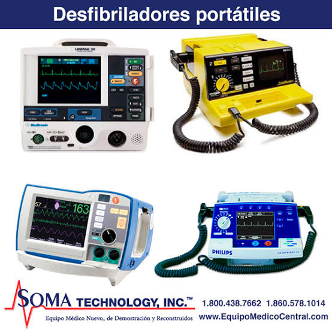
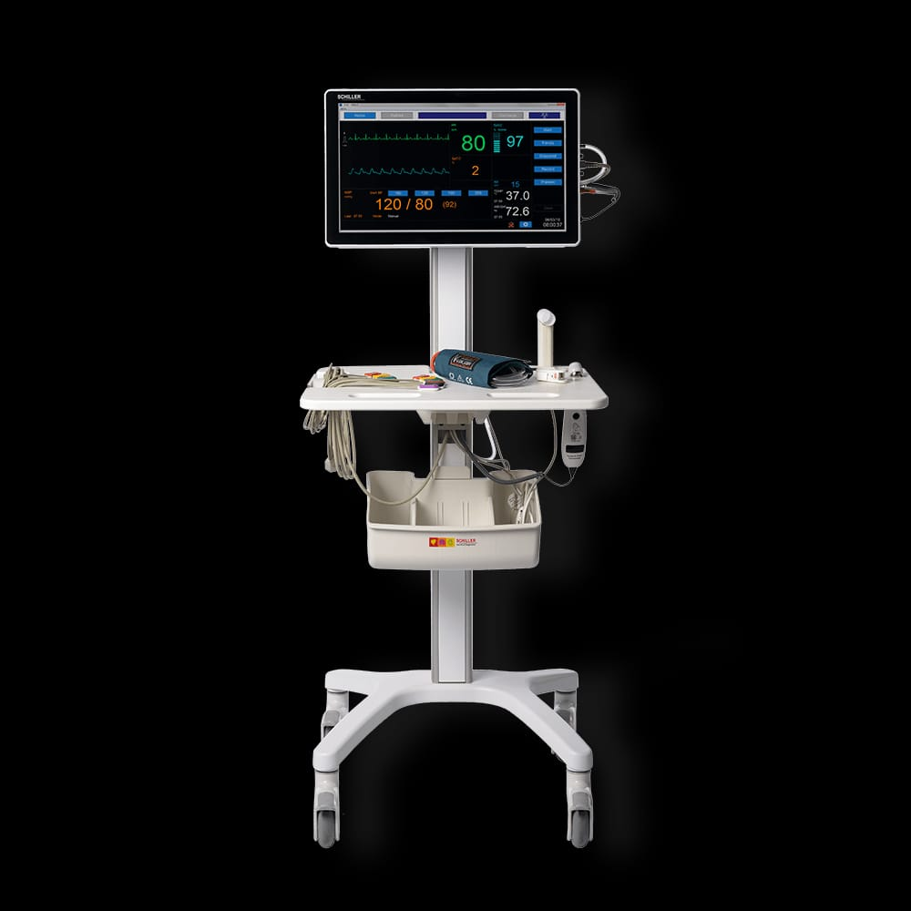

Atras
Encuentra aqui...
IMPORTANCIA DE LOS EQUIPOS EN URGENCIAS
EQUIPOS MÉDICOS EN URGENCIAS
Los equipos médicos en el área de urgencias son fundamentales para brindar una atención rápida,
segura y eficaz a los pacientes en situaciones críticas. Permiten monitorear signos vitales,
realizar diagnósticos inmediatos y aplicar tratamientos oportunos, lo que mejora significativamente las posibilidades de supervivencia.
Además, facilitan la labor del personal de salud, reduciendo errores y agilizando los procesos.
Su disponibilidad y correcto funcionamiento marcan la diferencia entre una intervención exitosa
y una complicación grave, siendo esenciales para salvar vidas y garantizar una atención médica de calidad en momentos decisivos.

UN BUEN MANTENIMIENTO
El buen mantenimiento de los equipos médicos es esencial para garantizar su funcionamiento óptimo, precisión y seguridad durante su uso. En el área de urgencias, donde cada segundo cuenta, un equipo en mal estado puede retrasar diagnósticos o tratamientos, poniendo en riesgo la vida del paciente. Un mantenimiento preventivo y correctivo adecuado reduce fallas, alarga la vida útil del equipo y asegura su disponibilidad constante. Además, minimiza los costos por reparaciones mayores y mejora la eficiencia del personal médico,
al brindarles herramientas confiables. Así, se contribuye directamente a una atención médica efectiva y segura.

¿QUÉ NO HACER PARA DAÑARLOS?
Para evitar dañar los equipos médicos, especialmente en el área de urgencias, es importante no cometer las siguientes acciones:
No usarlos sin capacitación adecuada.
No ignorar los manuales del fabricante.
No sobrecargarlos o usarlos para fines distintos a los indicados.
No conectarlos a fuentes eléctricas inestables o sin protección.
No omitir su limpieza o desinfección adecuada.
No dejar de realizar el mantenimiento preventivo.
No exponerlos a golpes, humedad excesiva o temperaturas extremas.
No ignorar señales de alerta o errores del sistema.
El cuidado correcto prolonga su vida útil y garantiza un rendimiento seguro y eficiente.